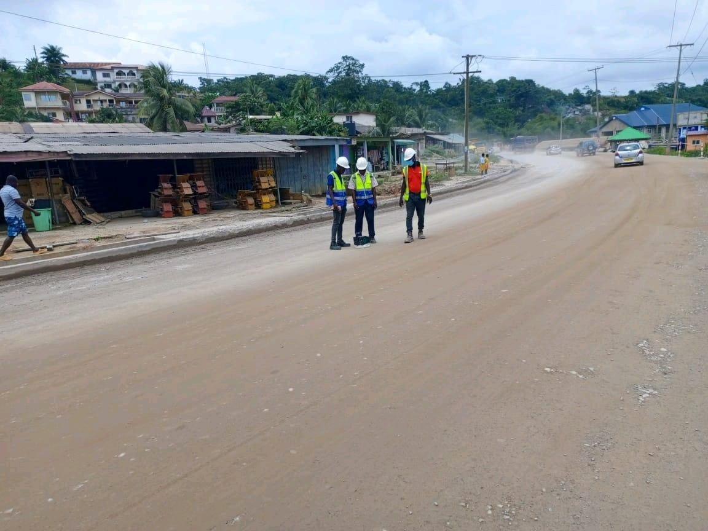
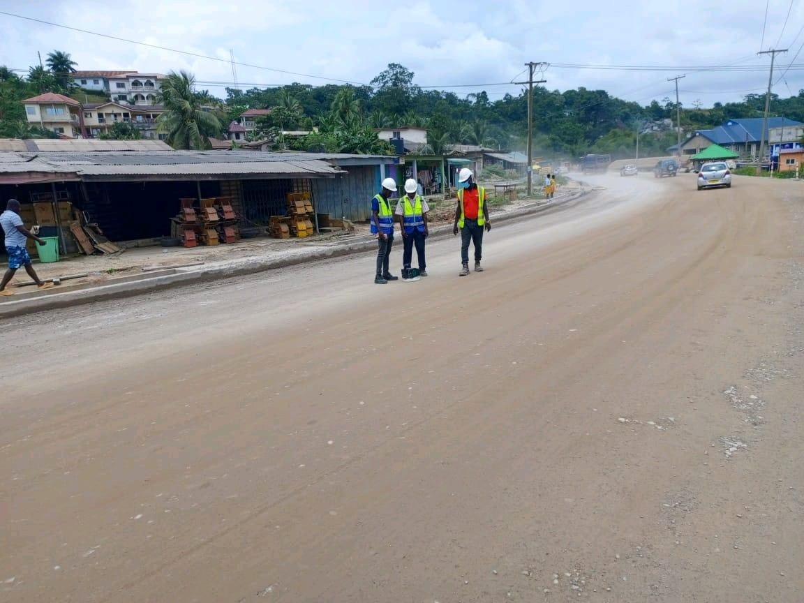
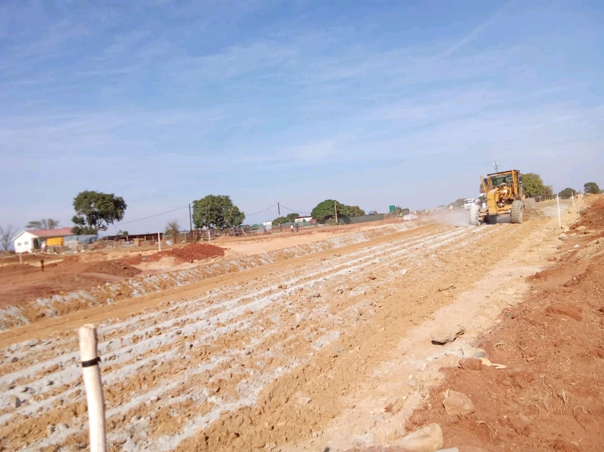
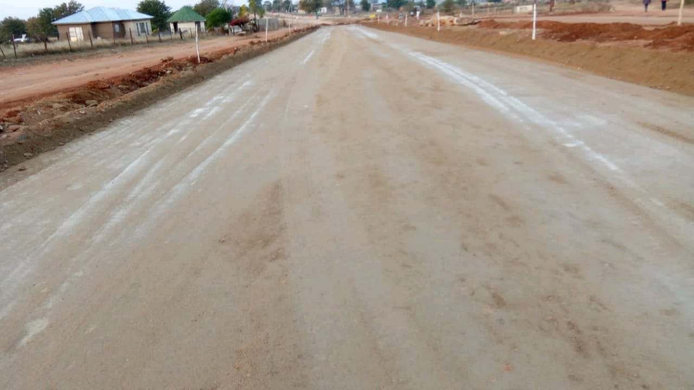
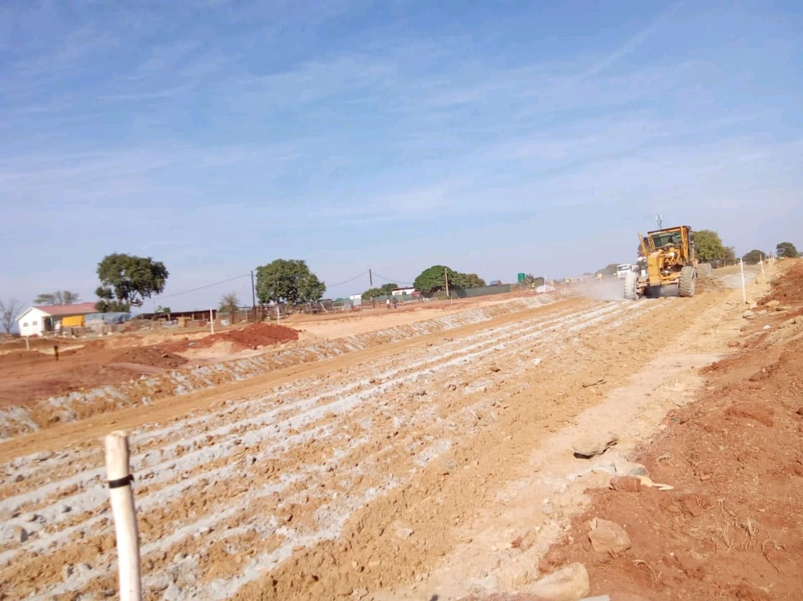
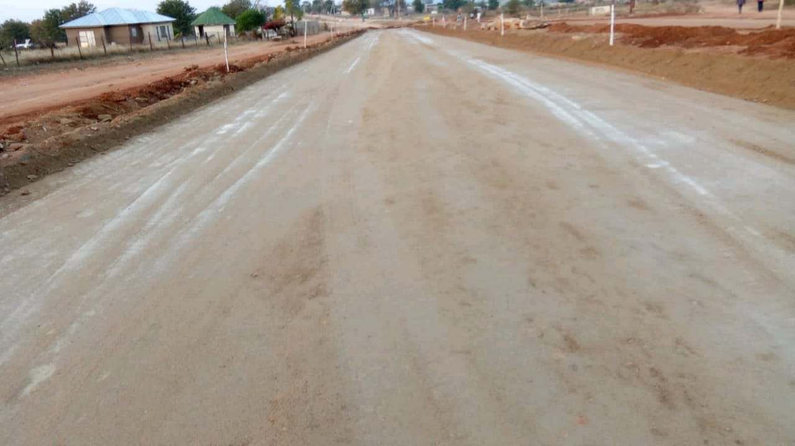

Construction Projects South Africa and DRC | Case Studies
Selected case studies showcasing our earthworks, road upgrades, stormwater solutions and concrete works across South Africa, DRC and the United Kingdom. Click any tile for a compact case study with scope, timeline and outcomes.
UK Project Building Construction Appartment
Building construction appartment project
Read case studyKolwezi Road Construction
Scope: Road construction and rehabilitation works including subgrade rework, layerworks, kerbing and stormwater management with drainage works in critical sections.
Outcome: Improved infrastructure and reduced travel times for local traffic. Delivered within budget and with coordinated stakeholder engagement.
 



Lubumbashi Building Construction Work
Scope: Building construction project including structural works and site development. Project included comprehensive planning and execution phases.
Outcome: Successfully completed building construction with quality finishes and client satisfaction.
.jpeg) 




Kinshasa Building Construction Work
Scope: Building construction project with site preparation and structural works. Comprehensive planning and material management throughout the project.
Outcome: Completed building construction project with efficient site management and quality results.


.jpeg)

Randburg Residential Housing
Scope: Residential housing development with comprehensive site preparation and service installation for high-density housing project.
Outcome: Successful residential housing development with quality construction and efficient project delivery.


.jpeg)
.jpeg)
UK Project Building Construction Appartment
Scope: Building construction appartment project with coordinated installation and structural works. Phased works to maintain quality standards in urban environment.
Outcome: Successfully completed appartment building construction with client satisfaction and quality finishes.

UK Building Construction Appartment
Scope: Full development of a multi-storey apartment complex including foundation works, reinforced concrete framing, internal fit-outs, and site landscaping.
Outcome: Delivered a modern residential block meeting UK building standards with efficient spatial layout, sound insulation, and high-quality finishes throughout.
Stormwater SA Management System
Scope: Stormwater management system with drainage features and water control infrastructure for comprehensive site management.
Outcome: Effective stormwater management system with improved drainage and water control.
.jpeg)
.jpeg)


S.A School Retaining Wall
Scope: School retaining wall construction with concrete works and structural support for educational facility.
Outcome: Successfully completed retaining wall with quality construction and structural integrity.
.jpeg)


Bridge Construction SA
Scope: Full bridge build including piling, deck installation and concrete finishing for a high-traffic route.
Outcome: Delivered a durable, load-efficient bridge structure with improved connectivity and long-term safety assurance.

.jpeg)

.jpeg)
Mining Access Road
Scope: Constructed a heavy-duty access road to serve a remote mining camp. Works included subgrade stabilization, widened carriageway, reinforced crossfalls and stormwater drainage to handle haulage loads.
Outcome: Delivered a robust access route designed for sustained heavy-vehicle traffic, reduced downtime from washouts, and a documented maintenance schedule for long-term reliability.